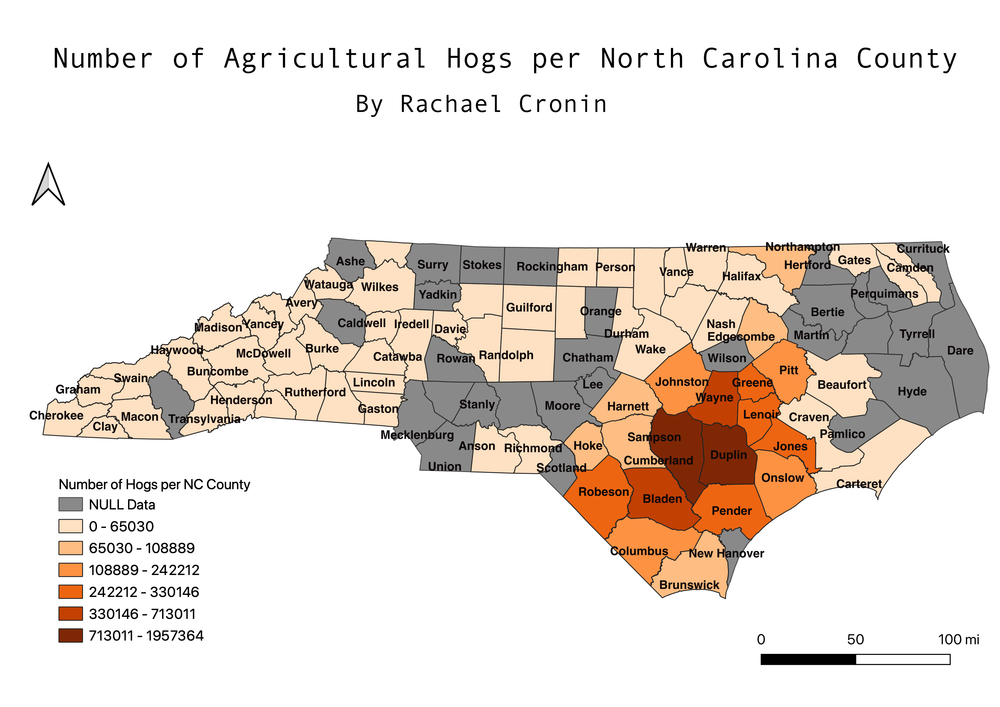

Homework 7: Choropleth of Our Own Interest
Rachael Cronin
I chose this topic because I'm interested in sustainable agriculture. One thing about agriculture that I think is really interesting is the regionalization of certain crops/livestock and the way certain areas adopt various products as their specialty. North Carolina is known for its pork barbeque and hog production. North Carolina barbeque has two styles, lexington and eastern, with eastern being the more popular and most widely eaten. I was interested to see what the distribution of hog production would look like across North Carolina and wanted to visually confirm that it was concentrated in the eastern part of the state. My map depicts the number of hogs in each county of North Carolina; and it demonstrates how unevenly distributed hog production is in NC. There is an extreme concentration of hogs in the eastern parts of the state.

Data for this Homework
Hog Numbers CSV dataset
Link to Hog Numbers CSV source
Link to NC counties polygon geoJSON shapefile
Link to NC county shapefile source